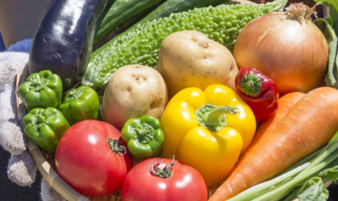

こだわり農家の
朝どりオーガニック野菜を
ご自宅で
最短
24時間で
お届け
無農薬
年間
100品目
以上
Aboutスグ食べとは
安心でおいしい野菜を
最短24時間で食卓へお届け
「スグ食べ」は、厳選した
オーガニック農家さんの穫れたて
野菜を販売しています。
食材から選べるのはもちろん、
生産者からも選べます。
生産方法や生産地、それぞれ異なる
こだわりで、お気に入りの農家さんを
見つけてください。
最短で24時間以内に届く新鮮な
オーガニック野菜宅配サービスです。
初回限定
スグ食べが選ばれる
3つの理由
本当の意味での産地直送
「なるべく収穫したばかりの状態で、野菜を味わって欲しい。」スグ食べでは、既存の産地直送サービスのように箱詰め用の倉庫を介すことはありません。農家が収穫したその日に、お客様の元へ直送で野菜をお送りします。
安心安全な無農薬野菜
出品している生産者は、有機栽培もしくは自然栽培の農家のみ。全ての商品が無農薬・無化学肥料など、安全にこだわって生産された「オーガニック農作物」です。そのため、どの商品も安心してお買い求めいただけます。

たくさんの旬な野菜との出会い
年間数十種の野菜を作る生産者から、今が旬の多様な野菜が届きます。食べチョク では生産者ごとに商品が異なります。中には年間100種類もの多品種生産をしている生産者も。旬な野菜はもちろん、珍しい野菜とも出会えます。
初めての方限定！お得な少量お試しセット
-
旬＊お試し野菜セット（6品目） ￥1,280（税込 / 送料別） 生産者：千葉県松戸市 ベジックス
-

旬＊お試し野菜セット（6品目） ￥1,280（税込 / 送料別） 生産者：長野県 飯田市 くちぶえ農園
初回限定
Farmers農家のみなさん
私たちの野菜、
こんなにおいしいんです！
-

「ひだまり農場」では栽培期間中に農薬・化学肥料を一切使用せず、年間約100種類の野菜と米、卵を生産しています。堆肥・肥料もすべて手作りし、有機質のものを使用しています。
岡山県ひだまり農場 山田洋一
-
「爽緑農園」では農薬や除草剤は一切使用せず、一つ一つのお野菜を丁寧に栽培しています。お日様の光をたくさん浴びて育ったお野菜は、葉や皮まで余すことなく食べることができます。
茨城県爽緑農園 太田紘一
-
「ひだまり農場」では栽培期間中に農薬・化学肥料を一切使用せず、年間約100種類の野菜と米、卵を生産しています。堆肥・肥料もすべて手作りし、有機質のものを使用しています。
岡山県ひだまり農場 山田洋一
-
「爽緑農園」では農薬や除草剤は一切使用せず、一つ一つのお野菜を丁寧に栽培しています。お日様の光をたくさん浴びて育ったお野菜は、葉や皮まで余すことなく食べることができます。
茨城県爽緑農園 太田紘一
Voiceお客様の声
食べてわかった、この違い
-
神奈川県A様
香りまでおいしい、
新鮮さ箱を開けた途端に広がった野菜の香り。
スーパーで買った野菜とはどうしてこんなに違いがあるのかとびっくりするほど豊かな大地の香りです。葉っぱまでシャキシャキのにんじんは特に子供がお気に入り。ゆでただけでも、野菜の甘みが優しく広がり、本来の味がたのしめます。 -
千葉県O様
安心できる品質に
大満足無農薬・無化学肥料にこだわった生産者から送られてくるため、とても安心して毎日食卓に出せるのがうれしいです。小さな子供や働き盛りの夫など、健康に気を遣って食から体づくりをしたい我が家には、もう手放せない野菜となっています。
-
東京都M様
旬の野菜が
食べられる豊かさ鮮度にこだわる「スグ食べ」だからこそ、旬になった野菜を「今だ！」と送ってきてくれるので、食卓に並ぶ野菜は常に旬の食材です。一カ所の農家さんからではなく複数の農家から選べるので、地域によっての旬の違いも楽しめます。たまに、スーパーに並ばないような珍しい野菜がまざるのも、わくわくしますね。
スグ食べの品質保証
商品に不備があった際には、
スグ食べが “全額” 返金対応します
スグ食べに出品している農家さんたちは、「大切に育てた自慢の農作物を、できるだけ美味しい状態で食べてもらいたい。」そんな想いを持った農家さんばかりです。
そのため、収穫から梱包・出荷にいたるまでしっかりと品質管理されています。
とはいえ、実物を見ずに野菜や果物を購入するのはちょっと不安…
そんな方にも安心してご購入いただけるよう、スグ食べでは品質保証をお約束しています。万が一届いた商品に不備があった際には、スグ食べにて全額返金対応いたします。
実はまだまだこんなに少ない、
日本のオーガニック農家
最近はレストランなどでもよく目にするのでもっとたくさんあるかと思いきや、
実はオーガニック農家は国内農家の0.5％しか存在していません。
でもその0.5％のオーガニック農家は、健やかな野菜を安心して食べてもらいたいという
強い気持ちで大切に野菜を作っています。
スグ食べでは、そんな農家さんを厳選し、出品していただいています。
農家さんによって栽培方法も違います。
自分や家族の体を作る礎となる野菜の栽培方法、この際把握してみては？
きちんと知っておきたい、栽培方法による違い
-
農薬・肥料・堆肥など自然栽培 第三者機関認証ナシ
-
有機の農薬・肥料・堆肥だけを使用しています有機栽培 第三者機関認証アリ無農薬栽培 第三者機関認証ナシ
-
化学農薬・肥料・堆肥も使用しますが、特別栽培 第三者機関認証アリ減農薬栽培 第三者機関認証ナシ
基準量の50％以下だけ
よくある質問
鮮度が抜群に違います。
通常の産直サービスは、一度倉庫などに野菜を集め、そこで箱詰め作業をして配送しています。この仕組みでは、お客様が商品を受け取る時には収穫してから3,4日が経過しています。スグ食べでは、箱詰め作業を農家さんにお願いすることにより、最短で収穫当日に商品を受け取ることができます。
無農薬にこだわる、オーガニック農家さんのみが登録しています。
有機栽培や自然栽培などの環境に配慮した農法で生産するには、通常以上に費用も手間もかかります。そんな中でも、「安心な野菜を食べて欲しい」という強い思いを持って、こだわって野菜を作っている農家さんがいます。 そういった、厳選されたオーガニック農家さんのみが登録しているため、安心してお買い物を楽しんでいただけます。
初めての方限定！お得な少量お試しセット
-
旬＊お試し野菜セット（6品目） ￥1,280（税込 / 送料別） 生産者：千葉県松戸市 ベジックス
-
旬＊お試し野菜セット（6品目） ￥1,280（税込 / 送料別） 生産者：長野県 飯田市 くちぶえ農園
初回限定